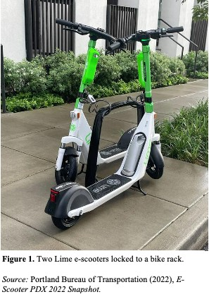

Tools Used
- Mass Media
- Norm Appeals
- Overcoming Specific Barriers
- Prompts
- Vivid, Personalized, Credible, Empowering Communication
Location
Portland, Chicago, and Ottawa
Initiated By
Cities of Portland, Chicago, and Ottawa
Partners
E-scooter suppliers: Bird, Bolt, Lime, Neuron Mobility, Razor, Ridy, Shared, and Spin.
Results
- Overall, the three cities saw 43 million km travelled by shared e-scooters, representing a reduction of about 14 million km of car travel over a period of roughly seven years.
- That reduced greenhouse gas emissions by about 1,100 metric tonnes.
- It also provided additional travel options for low-income residents.
E-Scooters Provide Micromobility Options in Portland, Chicago, and Ottawa
Interventions that focus only on communications and incentives often yield results that evaporate once the communications and incentives are discontinued. This case study highlights an intervention that reduces barriers through enduring changes to street and business infrastructures. It involves the creation of shared e-scooter businesses that provide an attractive alternative to driving a car for short trips. The e-scooters use less energy than cars and, because they run on electric power, any associated greenhouse gas emissions occur during energy production rather than when driving and can therefore be more easily mitigated. The intervention also involves development of safe lanes for e-scooters in priority locations.
Background
Note: To minimize site maintenance costs, all case studies on this site are written in the past tense, even if they are ongoing as is the case with this particular program.
Portland, State of Oregon, USA
As was the case with many North American cities, the City of Portland’s growth led to more vehicle traffic, which increased associate greenhouse gas emissions. This had a disproportionate effect on lower-income residents who had to travel longer distances because of gentrification and associated displacement.
Shared electric scooters first arrived in North America in 2017, in cities like Santa Monica and Austin. The next year, Portland’s Bureau of Transportation (PBOT) ran a shared e-scooter pilot. The City of Portland saw e-scooters as a way to shift trips from cars (especially single and double-occupant cars) to smaller, more efficient, less-polluting vehicles; to lower congestion and greenhouse gas emissions; and advance equity.
Chicago, State of Illinois, USA
In 2019, based on the success of e-scooter programs across the continent, Chicago also ran a shared e-scooter pilot.
Ottawa, Province of Ontario, Canada
In 2020 the Province of Ontario started a five-year e-scooter pilot program to support participating municipalities in piloting e-scooter implementation. Ottawa ran its first e-scooter pilot that same year.
Getting Informed
Portland
In 2018 Portland’s Bureau of Transportation (PBOT) ran a shared e-scooter pilot from July to November, to see if e-scooters could help meet the following four goals.
- Lower private motor vehicle use and associated traffic congestion
- Reduce fatalities and serious injuries on its streets
- Offer additional travel options to underserved Portlanders
- Lower air pollution, including greenhouse gas emissions
PBOT conducted three focus groups with historically underserved Portlanders (Black Portlanders, East Portlanders, and people with disabilities) which identified several barriers to e-scooter use:
- For relatively short trips that took too long to walk or take transit, there were no convenient alternatives to taking a car
- Cost of buying a scooter or using a shared e-scooter
- Riders had safety concerns
- Not everyone was fluent in English
- Not everyone had a credit card for payment
The pilot revealed safety challenges, particularly sidewalk riding and improper parking, and noted the need for further analysis of life-cycle emissions, including charging and operations. Despite these issues, about 700,000 trips were taken on 2,000 e-scooters, showing potential to reduce car travel, support safe mobility, and improve transportation equity.
The following are some of the benefits that e-scooters provided to users.
- Some short trips could be done in less time and/or with greater time flexibility than if taking transit
- Users could travel farther and carry heavier loads than if they were walking
- Some people who could not cycle (e.g. due to knee problems) now had a quicker option than walking
- Reduced the need to own a car, which can be expensive
- Greater independence
From April 2019 to December 2020, PBOT ran a second pilot with three goals.
- To learn more about e-scooter operations and total associated emissions
- To test management strategies for addressing the issues and lowering the barriers identified in the first pilot (Overcoming Specific Barriers)
- To learn more e-scooter use and operations over the winter months
- The number of vendors was reduced to three to lower administrative costs, and the vendors had to pay an upfront fee of $1/day/ device to cover administrative costs.
- The pilot area was expanded to almost the entire city - four times the area tested in 2019.
- Geofencing was introduced (explained in the table above).
- Scooter users had to lock their scooters to a fixed object after each ride, substantially improving parking performance compared with the first pilot.
- This pilot involved 10,000 scooters for rent and resulted in 540,035 scooter trips, averaging 2.1 miles (3.4 km) and 18.5 minutes per trip. That’s about 1.8 million km travelled.
- Equity considerations were included. Vendors were required to host two promotional events a month in priority areas. Lime and Bird offered 50% discounts on per-minute costs for rides starting or ending in the Priority Area. Two-thirds of Priority Area riders agreed that shared e-scooters were affordable (only 55% of all riders agreed.) Halfway through the pilot, nearly half of the equity Priority Area was within a two-minute walk of a shared e-scooter, and almost the entire Priority Area was within a five-minute walk. Riders living in the Equity Priority Area were 1.6 times more likely than riders citywide to say they “sometimes” or “often” used a shared e-scooter to get to or from work.
- 36% of participants used the e-scooters to get to or from transit. 22% said they used the scooters to avoid transit because they felt it safer to be physically distanced during the COVID pandemic (which began in 2019).
- 29.5% of scooter trips replaced car trips. Half of the scooter users were NOT using the city’s bikeshare service, 23% used both bikeshare and shared e-scooters, and 10% would have used a bikeshare if the e-scooter had not been available.
- The e-scooter vendors educated users through their apps, handouts, and social media. They were also required to host learn-to-ride events and helmet giveaways. All users had to first achieve an 80% score on a safety quiz. Scooter injuries were relatively minor and affected the scooter users themselves, not others. (Vivid, Personalized, Credible, Empowering Communication)
- The highest priorities for improvement among riders were integrated payment methods (using Ventra) and more dedicated lanes. Other suggestions included increasing the size of the shared e-scooter fleets, larger wheels, stronger brakes, and lower minimum amounts that vendors could place on credit cards.
- People who took cars for short trips (under three km)
- People traveling in especially congested areas
- Low-income people
- People underserved by local transportation options
- To help keep sidewalks clear and safe, PBOT established new rules requiring scooter users to lock their scooters to bike racks or city signposts after each ride. These rules were launched through a public education campaign named “Ride it, Park it, Lock it” which ran from August 2024 through October 2024 and included signage placed on TriMet busses and benches, as well as advertisements on social media. Riders could then conveniently return their scooters near their destinations, rather than search for designated parking areas. (Overcoming Specific Barriers)
- To enable the new lock-to requirement, the scooters were equipped with cable locks that extended out from the stem of the scooter. When in use, the lock was placed in a holster that signaled to the scooter that it was no longer locked. Once the ride was finished, the cable lock was wrapped around permitted structures, and a photo was required of accurate parking. Lime offered an app that then advised riders whether the parking was successful or whether they needed to correct a mistake.
- Desire to participate in the shared e-scooter program varied by business. Businesses that welcomed riders were prioritized for the installation of e-scooter parking structures near their locations. Local hotels allowed e-scooter parking in front of the property to increase guest convenience. Portland State University, located in downtown Portland, offered parking stations across campus for student use and students could access discounted rates through the “Biketown for All” program. Due to the riding age limit, the downtown high school was less involved. Additionally, strict no-riding and no-parking rules were enforced inside parking garages.
- PBOT tracked where scooters were parked and Lyft conducted its own user research study. The data showed that e-scooters were being used frequently for first/last mile connections with public transit. To better accommodate these riders, PBOT began prioritizing parking stations near transit stops.
- A convenient transportation option for shorter trips
- An enhanced experience of the surrounding neighborhood
- More options for collaboration spaces in addition to office conference rooms
- An increase in engagement and satisfaction
- Advantages in recruiting top talent and tenants
- Less congested, less polluted, and more accessible neighborhoods
- An increase in the value of their buildings
- A boost to their corporate reputations
- Help meeting their environmental and sustainability objectives
- Portland: From 2018 to April 2025, Portlanders rode e-scooters for 10.4 million km. Roughly 40% of these trips replaced car trips, representing a reduction of about 4.2 million km of car travel.
- Chicago: From 2019 to 2024, Chicago residents rode e-scooters for 30 million km. Roughly 30% of these trips replaced car trips, representing a reduction of about 9 million km of car travel.
- Ottawa: From 2019 to 2024, Ottawa’s e-scooters were driven for about 2.5 million km. If at least 30% of these trips replaced car trips that represents a reduction of about 0.8 million km of car travel.
- Overall, the three cities saw 43 million km travelled by shared e-scooters, representing a reduction of about 14 million km of car travel.
- Each of the three cities calculated greenhouse gas reductions somewhat differently.
- In all, the three cities likely reduced greenhouse gas emissions by about 1,100 metric tonnes.
- Reduced traffic congestion
- Reduced air pollution
- Supported purchases at more local businesses and aided these cities’ economic recovery during the COVID-19 pandemic
- Provided additional travel options for low-income residents
- Supported tourism by motivating tourists to take more local trips to see sites
- Program messaging should focus on safety for the e-scooter riders
- The perception that e-scooters were dangerous was not supported by the data
- Good rider locking behavior can be encouraged and remained a focus for all sidewalk parking
- E-scooters were a great option for users to replace single occupancy vehicle trips, connect to transit, or just have fun
- Improved transportation equity by helping residents of marginalized neighborhoods expand their low-cost transportation options.
- While per-person emission reductions are small, the scale of participation, multi-city replication, and integration of safety, equity, and technology components mark it as a mature and transferable urban intervention. However, replicability may be limited by the high budgets required to achieve city goals.
- One of the key benefits of this approach is that, in addition to educating residents, it resulted in longer-lasting infrastructure changes as well.
- Illustrates the value of doing pilots and surveys before rolling out a permanent program.
- Demonstrates the value of partnering with businesses and workplaces to create more incentives for using e-scooters.
- Chicago and Ottawa demonstrate how the approach can be tailored to engage businesses and building managers.
- Ottawa demonstratesthat promoting the shared e-scooters to transit users via a transit app can significantly increase the use of the e-scooters to connect with transit trips.
- By 2024, shared e-scooter programs had been introduced in over 280 cities around the world. Riders had taken over 200 million trips a year, travelling over 377 million km and saving over 20,000 metric tons of greenhouse gas emissions.
- Reducing barriers to action and creating infrastructure that is supportive are key elements of this case study. These approaches can be applied across a wide range of behaviors.
- Chicago 2020 E-scooter Evaluation https://www.chicago.gov/content/dam/city/depts/cdot/Misc/EScooters/2021/2020%20Chicago%20E-scooter%20Evaluation%20-%20Final.pdf
- Chicago – RIDY - Micromobility is the Future of Wellbeing and Sustainability for the Office https://www.hqo.com/resources/blog/micromobility-is-the-future-of-wellbeing-and-sustainability-for-the-office/
- Ottawa – Bird E-scooter Report 2024 https://documents.ottawa.ca/sites/default/files/bird_escooter_report_2024_en.pdf
- Ottawa Neuron Mobility City of Ottawa 2024 Operating Reporta https://documents.ottawa.ca/sites/default/files/neuron_escooter_report_2024_fr.pdf
- City of Ottawa E-Scooter web page https://ottawa.ca/en/city-hall/creating-equal-inclusive-and-diverse-city/accessibility-city/transportation/e-scooters#
- Portland E-Scooter Findings Report 2019 https://www.portland.gov/transportation/regulatory/escooterpdx/2019-e-scooter-report
- Portland 2022 E-Scooter Snapshot https://www.portland.gov/transportation/regulatory/escooterpdx/2022-e-scooter-snapshot
- Portland 2024 Update: Portland E-Scooter Program https://www.portland.gov/transportation/pedestrian-committee/documents/pbot-e-scooter-update-february-2024/download
- Portland dashboard https://public.ridereport.com/pdx?utm_medium=email&utm_source=govdelivery&vehicle=scooter
Five companies—Bolt, Lime, Razor, Shared, and Spin—received e-scooter fleet permits in April 2019 through a competitive application process. In August, Bird was added as an additional supplier. Each participating supplier had the opportunity to add to its fleet based on such factors as scooter use, citywide coverage, and the provision of safety workshops. In all, 2,865 e-scooters were permitted and were rented 5.8 million times. The cities’ frequent audits incentivized e-scooter companies to prioritize rapid complaint resolution, implement equity programs for underserved communities, collaborate with community organizations, and invest in cutting-edge technologies that strengthened the program.
During the pilots, PBOT worked with affordable housing providers to promote the e-scooters to lower-income residents through Portland’s Transportation Wallet for Residents of Affordable Housing program. It also promoted to a broader audience through the city’s Transportation Wallet program for parking districts. (Personalized, Credible, Empowering Communication)
Throughout the 2018 and 2019 pilot programs, PBOT consulted with a range of stakeholders. The public provided feedback via email, phone, and an online feedback form. In addition, over 2,000 riders provided feedback via a user survey.
The following charts shows how the barriers and other issues identified in the first pilot study were addressed during the second pilot. (Overcoming Specific Barriers)
|
Barriers |
How they were addressed |
|
Lack of options for short trips Cost of buying a scooter |
· Provided shared e-scooters, at a cost determined by the duration of the trip. |
|
Not everyone was physically abled to ride an e-scooter |
· PBOT’s permitting process prioritized companies offering seated e-scooters. |
|
Riders had safety concerns |
· PBOT built more protected lanes for bicycles and scooters. For example, one stretch of protected lanes along 102nd Avenue resulted in a 125% increase in ridership from 2018 to 2019. · PBOT monitored e-scooter crashes, injuries, and helmet use. · In November 2019, PBOT held a “safety summit” with all e-scooter suppliers, to discuss safety concerns and identify potential solutions. |
|
Cost to use a shared e-scooter |
· E-scooter operators had to submit a reduced pricing plan for low-income residents. · In the summer of 2019, PBOT partnered with seven affordable housing providers to create a reduced-cost Transportation Wallet for residents of affordable housing. PBOT, transportation providers, and property managers assisted residents with sign-ups at on-site fairs. This program became the primary source of low-income e-scooter plan enrollments. |
|
Not fluent in English No credit card |
· PBOT’s permitting process prioritized companies offering apps in multiple languages and options to pay with cash. |
|
Issues |
How they were addressed |
|
Riding on sidewalks |
· Education was provided through each supplier’s e-scooter app. · Suppliers that helped achieve city goals could increase the size of their fleets. · PBOT charged the e-scooter suppliers a $50 fine per illegal riding incident. That cost was then passed on to the suppliers’ customers. |
|
Riding in parks (not allowed) |
· Dedicated bike and scooter lanes near parks provided a practical alternative to riding in the parks. · Education was provided through each supplier’s e-scooter app, and through park signage. · A $50 fine for illegal riding was charged to the e-scooter suppliers, who then charged their customers. · Geofencing technology used GPS/RFID to trigger warnings when users rode or attempted to end their trips in restricted zones. |
|
Improper parking |
· Education was provided through each supplier’s e-scooter app. · PBOT partnered with two disability rights and advocacy groups and one of the e-scooter suppliers to produce a video about the importance of sidewalk access for people with disabilities. · A $10 fine for illegal riding was charged to the e-scooter suppliers, who then charged their customers. · Suppliers that helped achieve city goals could increase the size of their fleets. · PBOT installed 24 dedicated e-scooter parking corrals in high-use areas. |
|
Total climate impacts unknown from raw material extraction through manufacturing, use, repair, and disposal |
· PBOT required suppliers to provide a life cycle analysis according to international standards (ISO 14040/ 14044). |
|
If not effectively managed, scooter use could eat into use of low-carbon modes such as walking, cycling, transit, and not travelling |
· PBOT collected information on the use of each mode over time and compared it with other cities across North America. |
The pilots found that e-scooters had the potential to threaten road safety, compete with more efficient options (like public transit and cycling), and reinforce existing inequities (e.g. through limited-service areas, cultural barriers, and expensive pricing.)
According to a summer 2019 survey with over 2,000 respondents, 28% had used the scooters to commute for school or work, 24% had used the scooters for fun or recreation, and only 8% had used them to get to or from transit. 58% of e-scooter trips replaced the use of low-carbon modes, while only 37% of e-scooter trips replaced car trips. Still, that 37% shift reduced CO2 emissions by 167 metric tons, according to PBOT’s calculations. The average trip was 1.1 miles/1.8 km and 14 minutes, with winter trips being slightly shorter.
Chicago
The city of Chicago also ran two e-scooter pilot studies.
The first pilot ran from June 15 to October 15, 2019, with 10 vendors and 2,500 scooters. It faced similar barriers and issues to those experienced in Portland and other North American cities.
The second pilot ran from 5 am to 10 pm, from August 12 to December 12, 2020.
Prioritizing Audiences
These programs prioritized:
The broad objectives were to promote the use of electric scooters (e-scooters) for short trips instead of cars, offer additional travel options to low-income and other underserved citizens, and lower air pollution, including greenhouse gas emissions. To the best of our knowledge, none of the municipalities set specific (quantified) measurable objectives.
Delivering the Program
All three programs addressed common barriers, as described above for Portland (Overcoming Specific Barriers). They also promoted their programs using Mass Media, and Vivid Credible, Empowering Communication. Further, the high visibility of the shared e-scooters increased Norm Appeal
Portland
PBOT launched a permanent e-scooter program in the summer of 2024, in which two operators (Lime and Lyft) offered over 3,500 e-scooters to rent citywide. The downtown riding area was structured in such a way that e-scooters could ride safely by using bike lanes, neighborhood greenways, and lower traffic roadways to avoid riding where pedestrians were present.
Parking and Community Collaboration

PBOT worked with affordable housing providers to promote the e-scooters to lower-income residents through Portland’s Transportation Wallet for Residents of Affordable Housing program. It also promoted to a broader audience through the city’s Transportation Wallet program for parking districts. (Personalized, Credible, Empowering Communication)
Lyft operated its e-scooters through the Lyft app or Biketown, the existing bikeshare program, and Lime operated through its own app. The apps were used to locate, unlock, and reserve e-scooters. In the Biketown app, when a location was selected, the user was informed as to how many e-scooters or e-bikes were available along with the estimated range remaining before a charge would be necessary. They were also able to see how many open spots were available for returns. Additionally, the apps provided instructions on how to unlock the e-scooter, where to park a scooter, how to end a ride, how to inspect the scooter, and how to safely ride. (Personalized, Credible, Empowering Communication)
The vendor apps also provided route planning. The map within the app designated where bike lanes, bike-friendly roads, and no ride zones were located. In addition, the users were informed of parking options (locations of Biketown stations). The downtown riding area was structured in such a way that e-scooters could ride safely by using bike lanes, neighborhood greenways, and lower traffic roadways to avoid riding where pedestrians were present. (Personalized, Credible, Empowering Communication)

The maximum distance an e-scooter could travel was approximately 20 miles before needing to be recharged (compared to an average of 30 miles for an e-bike). They were recharged through battery swaps. The vendors had contractors who traveled throughout the city swapping batteries as needed.
Although helmets were required by Oregon state law, the policy was difficult to enforce. To encourage helmet use, PBOT and vendors issued reminders on social media platforms. In 2025, over 1,000 free helmets were given away.
Rules for riding were provided within the rental apps as well as on PBOT’s website. Illegal riding incidents were reported on the transportation website or by calling 311. Once a complaint was received, it was then sent to the vendor, who was allowed a predetermined amount of time to address the complaint depending on how severe the violation was. Violations would result in additional charges to the rider and even platform suspension. In June 2025, 170 complaints were received from the 170,000 total trips.

In 2025, 1.6 million e-scooter trips were recorded, up from 1.2 million in 2024.
Chicago
In 2023 and 2024, Chicago added over 100 miles of new cycling / scooter lanes. It also introduced electrified e-scooter stations to eliminate the time, cost and carbon emissions associated with having to swap out batteries. In 2024, 4.3 million trips were made using the shared e-scooters.
Lyft, Lime and Spin were the three operators chosen for the permanent program. Lyft operated through Divy, Chicago’s bikeshare system. The Divy application worked similar to Portland’s Biketown application, providing all essential information needed for renting an e-scooter or bike. Lime and Spin operated under scooter-sharing business licenses in Chicago.
Riders that used e-scooters to get to a particular location, had the option of parking at any nearby Divy station or could choose to pay an additional $2.60 fee to park at public bike racks, light poles, signposts, or retired parking meters.
Chicago required participating scooter companies to provide education and outreach events each year, at least half of which had to be in low-income areas. (Vivid, Personalized, Credible, Empowering Communication) First time users still had to achieve an 80% score on a safety quiz.
In addition, as the COVID pandemic ended, employers, building owners and property teams began to focus on a workforce that was reluctantly returning to the office rather than working from home. E-scooters were seen as a valued perk for building tenants and their employees. A new vendor – Ridy – emerged to cater to this niche. The benefits it offered to employees and residents were:
Participating businesses reaped the following benefits.
Measuring Achievements
Each shared e-scooter was equipped with GPS and smart technology, which enabled the automatic counting of trips and Vehicle Miles Travelled (VMT).
Calculating reductions in greenhouse gas emissions proved more challenging. The past experience of many North American cities had shown that about 40-45% of the trips taken by e-scooters would otherwise have been taken by car instead. However, other factors also needed to be considered, including emissions from manufacturing the e-scooters; their maintenance (including vehicle emissions associated with servicing them, ensuring their distribution where needed, and swapping-out batteries to keep them charged), and their utilization rate and service life.
Financing the Program
Portland charged vendors $80 per e-scooter and $0.80 per ride. While slightly higher than other cities, the e-scooter fees were enough to fund the program, including staff payroll. We were unable to find budget information for the Chicago and Ottawa implementations.
Results
Individual riders in the three cities averaged about 3-5 trips each per year by shared e-scooter, travelling roughly 2-4 km per trip, and saving in the order of 0.3 to 0.6 kg of greenhouse gas emissions per year per user.
Reductions in Kilometers Travelled by Car
Reductions in Greenhouse Gas Emissions
Other impacts
Lessons Learned
Portland
Notes
More information
Case Study Development Credits
This case study was was written by Jay Kassirer and Heather Marie Poleon in 2026, based on information linked to in the section “For More Information”, and correspondence with Ann Brask – Portland’s Shared Micromobility Program Manager.
Search the Case Studies